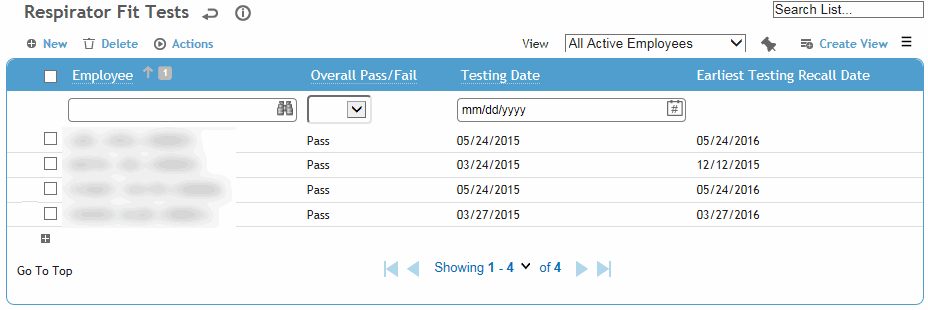
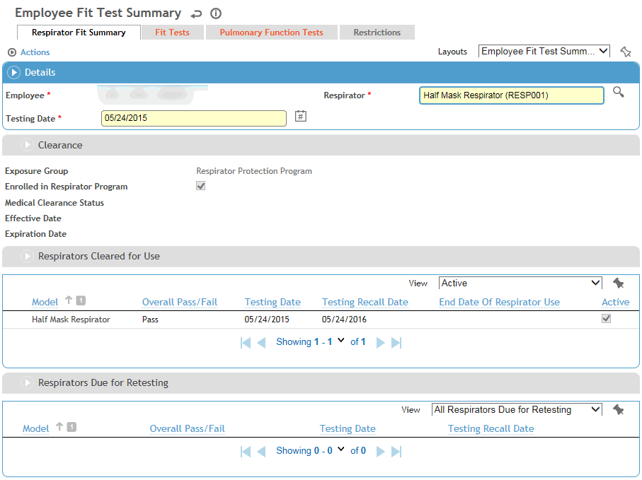
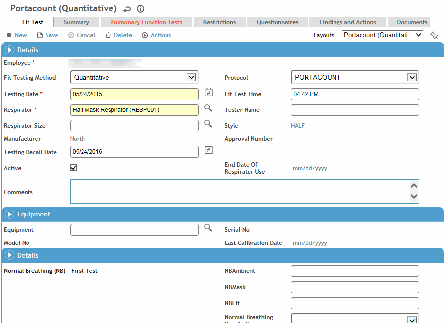
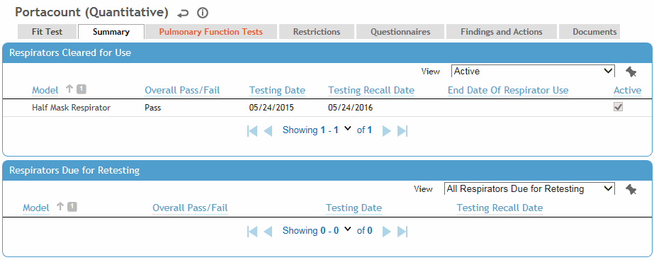

In the Safety (or IH) menu click Respirator Fit and use the search list to select an employee.

If the desired employee is not listed, click New to create a new fit test record (skip to step 3).
or
If the desired employee is listed, click the link to view the employee’s fit test information.
You will see a Respirator Fit Summary record containing employee details, employee clearance status, respirators cleared for use and respirators due for re-testing. The clearance section populates based on the following:
Exposure Group: per “Respirator Clearance Group” system setting
Enrolled in Respirator Program: checkbox populated from the EmployeeExposureGroup noted in system setting with Start date = not null and end date= null, exclude = 0; The logic is based on entry of employee on Employee tab of exposure group.
Medical Clearance Status: clearance status in clinic visit exam activities for system setting EmployeeExposure group.
Effective Date and Expiration Date: medical clearance status in clinic exam activities.

In addition, you can access all of the employee’s fit test records on the Fit Test tab, review clearance information on the Pulmonary Function Tests tab and view restrictions on the Restrictions tab.
To create a new respirator fit record, click New in either the main respirator fit module list screen, the employee summary page, or the Fit Test tab (continue as in step 3).
Respirators must be defined in the Equipment module (see Equipment).
The fit test form opens. On the Fit Test tab, enter or update information about the test.

Most fields are self-explanatory, but you should know:
If you select “Quantitative” as the Fit Testing Method, you can enter values for test results as well as a pass or fail. If you select Qualitative, you can enter only a pass or fail.
Select the test Protocol or leave it blank. The tests for which you can enter results will differ depending on the protocol chosen. If you leave the protocol blank, you can enter results for the following tests: Normal Breath (NB), Deep Breath (DB), Side to Side (SS), Up Down (UD), Grimacing (GRM), Talking (TK), Bent Over (BOV), Normal Breath (second test) (NB).
The Testing Recall Date may be calculated based on a recall period and gap if defined in your system settings. If these system settings are not defined, Cority calculates the Testing Recall Date as one year from the initial test date, but you can change this if necessary.
Respirators are Active by default; to indicate the end of the respirator use, clear the Active checkbox. The End Date of Respirator Use is set to the date that the respirator is deactivated.
Click Save.
The Summary tab displays the respirators cleared for use by the employee, and the respirators on which the employee is due to be re-tested. Models are listed as due for re-testing if the recall date for testing has passed without the employee having undergone the appropriate procedure. The summary is based on all respirator fit test records for the employee.

The Pulmonary Function Tests tab displays all respirator clearances for the employee. The date and clearance status are taken from results entered in the Pulmonary Function module. Click a link to view additional information about the clearance (e.g. height, medical limitations).
The Restrictions tab displays all work restrictions recorded for this employee in the Demographic, Medical Chart, Clinic Visits, Case Management, Pulmonary, and Respirator Fit modules. For information about entering a work restriction, see Recording Work Restrictions.
To quickly end all listed restrictions, choose Actions»End All Active Restrictions.
The Questionnaires tab allows you to associate questionnaires with a record. For information about creating and administering questionnaires, see Questionnaires.
The Findings and Actions tab displays all findings and actions recommended (or required) as a result of this testing.
For information about recording a finding and its actions, see Recording a New Finding.
To view an action’s attachment, open the finding and choose Actions»Open Document.
Use the Documents tab to link an external file to the record to provide easy access to the file (for more information, see Linking or Importing a Document).